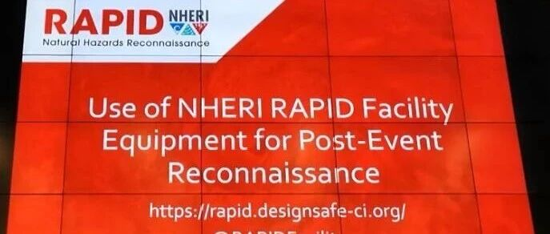

J Berman：利用NHERI RAPID装备开展灾后救援 | PEER北岭地震25周年学术报告录像(6)
2019年1月17日-18日，美国太平洋地震工程研究中心（PEER）在美国洛杉矶召开了美国北岭地震25周年学术会议。报告内容涵盖北岭地震回顾、重要成就和挑战、区域性能化抗震、计算模拟等专题，今天给大家介绍第六个报告：
RAPID中心执行主任Jeff Berman：《利用NHERI RAPID装备开展灾后救援》
Use of NHERI RAPID Facility Equipment for Post-Event Reconnaissance - Jeff Berman, RAPID Center Operations Director
RAPID的任务

RAPID的装备

RAPID的使用方法

RAPID近期参与的应急救灾行动

前期内容
--------End-------
相关研究
长按识别二维码，关注我们的科研动态